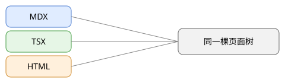

这一页的文件是 content/(kit)/page-types/html-page.html，整个文件放在 iframe 里显示。页面里的二、三级标题照样进右边的本页目录。
content/(kit)/page-types/html-page.html
下面这张图是同一个文件夹里的 html-page-figure.svg，用相对路径引用：
html-page-figure.svg

下面这一行由页面自己的脚本写出：
脚本没有运行